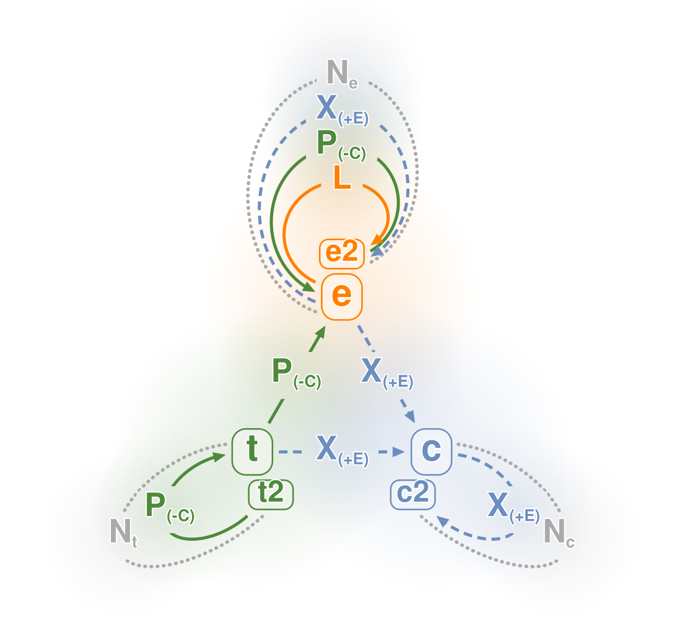

A newcomer's introduction to infinite.pm — Infinite Process Modeling (ipm, also written IPM).
"The universe is made of stories, not of atoms." – Muriel Rukeyser
infinite.pm is a way to model processes, stories, and systems as readable graphs. It is an experiment in applying Mark Burgess's Semantic Spacetime γ(3,4) (SST) representation — to everyday modeling work and software engineering.
Mark Burgess's insight, and the foundation of γ(3,4): with just three kinds of nodes and four kinds of edges, you can sketch (in our reading) any observer's view of anything in space and time — a process, a story, a system, life, the universe, and everything.
Where this is going. The infinite.pm project is an experiment in Semantic Spacetime-based modeling and cooperation between agents. Smart agents like humans, AI agents, and smart machines assess promises made by other agents, stigmergic trails, tools, and things — to explore, evolve, and endure. The aim is to help us externalize our mental models in the form of ipm stories/processes/loops, think with them as a partner (in the spirit of Niklas Luhmann's Zettelkasten), and gradually integrate them into one living graph. The medium we are aiming at: the infinite canvas.
Tooling. Today there is a VS Code extension for live editing and preview of ipmt (the infinite.pm text format for these graphs), plus a small renderer that compiles ipmt fenced blocks into the SVG diagrams you see throughout this README. mj41 is prototyping these (spec-driven/vibe-coded) and will open-source them over time as they stabilize. Sponsors — AI-token kind or life kind — are always welcome; both speed this up a bit.
| Kind | Symbol | What it is | Examples |
|---|---|---|---|
Event |
e (orange) |
A transient happening — fast at the model's timescale | "User clicks button", "Build runs", "K8s service deploying", "Plum murders Scarlet" |
Thing |
t (green) |
A persistent participant — slow at the model's timescale | "Alice", "my laptop", "service A container", "knife K1", "Miss Scarlet", "Prof. Plum" |
Concept |
c (blue) |
A quasi-invariant pattern; a property that events or things can express | "human", "microservice", "production environment", "murder" |
Rule of thumb, in order:
eventthingconceptA thing isn't literally static — it's slow enough at the chosen timescale that you can treat it as unimportant for the model's purpose. A laptop is a thing inside a "type a doc" event; the laptop is an event chain if you zoom out to its whole lifetime, from purchase to retirement. Pick the scale first, then split fast/dynamic and slow/static.
A model is a simplified representation of something for a purpose. — Joshua Spodek, Leadership Step by Step, via mj41 — my mental models
The purpose decides what goes in and — equally important — what stays out. "What is not in the scope of your model has the same importance as what is in the scope." A map of the Czech Republic for "where is it on a globe?" looks nothing like a map for "where is the nearest bakery?" Both are good models if the purpose is clear; both are useless if the purpose is the other one.
Before you start creating an infinite.pm graph, decide what question or purpose this model/view is going to answer. That decides which events, things, and concepts belong in it, and which would just be noise.
There is no view-from-nowhere. An ipm graph is always someone's account of a slice of the world — what they saw, at their chosen timescale, with their chosen boundary. This matters most for concepts: deciding that swap t-shirt ::e expresses swap of clothing ::c rather than magic trick ::c is in the eye of the beholder. Two honest observers can produce two different but non-contradictory models of the same scene. Combined with a shared collection of models, infinite.pm tools can surface views and beliefs you missed.
We'll model the same tiny scene step by step: Patrick swaps a black t-shirt for a white one.
Start with the activity. Events lead to other events.
Patrick wears black t-shirt ::e
--> Patrick wears white t-shirt ::eThe arrow --> between two events means leads-to (rendered as an orange arrow) — temporal/causal flow. ::e marks each node as an event. The chain shows only what the observer directly saw: two wear states. Step 2 onward adds a swap event between them — a hypothesized middle step the observer didn't witness.
Thing Patrick is in every event. A thing participates in an event by being part of it — a spatial containment relation (the thing sits inside the event's region of space and time), rendered as a green arrow.
Patrick wears black t-shirt ::e wearB::a
--> Patrick swaps t-shirt ::e swapT::a
--> Patrick wears white t-shirt ::e wearW::a
Patrick --> wearB, swapT, wearWTwo new tricks:
wearB::a is an alias — a short stable name for the long event title.Patrick --> wearB, swapT, wearW line fans out: one source, three targets.Unmarked nodes default to things. The arrow goes from the thing to the event — the thing is part of the event, never the other way around (a modeling rule, not a syntactic accident).
Add the t-shirts as participants too. The black t-shirt is worn in wearB and is still on Patrick (briefly) during swapT; the white t-shirt enters at swapT and stays on through wearW. Each thing attaches to the events where it actually appears.
Patrick wears black t-shirt ::e wearB::a
--> Patrick swaps t-shirt ::e swapT::a
--> Patrick wears white t-shirt ::e wearW::a
Patrick --> wearB, swapT, wearW
black t-shirt --> wearB, swapT
white t-shirt --> swapT, wearWYou can also zoom out. The same scene can be told at a coarser level: one single event that names only the observable change (Patrick wore black, then white), with every participant attached at that one level. The mechanism — how he changed t-shirts — is hidden inside the wrapper event and revealed only when you zoom in.
Patrick wears black then wears white ::e wearBW::a
Patrick --> wearBW
black t-shirt --> wearBW
white t-shirt --> wearBWSame story, different zoom level. The right level depends on the purpose of your model — and you don't have to pick just one.
Going the other direction, zoom in: replace a coarse event with its sub-events. The next two diagrams show pure event structure — no participants, no concepts — so the zoom move stands on its own. First, drill into wearBW and show its three mid-level sub-events as a leads-to chain, each part-of the parent:
Patrick wears black then wears white ::e wearBW::a
Patrick wears black t-shirt ::e wearB::a
--> Patrick swaps t-shirt ::e swapT::a
--> Patrick wears white t-shirt ::e wearW::a
wearB --::P--> wearBW
swapT --::P--> wearBW
wearW --::P--> wearBWWe can keep going — swapT itself decomposes into a finer chain of moments. Here are both zoom levels at once, three levels of pure event nesting:
Patrick wears black then wears white ::e wearBW::a
Patrick wears black t-shirt ::e wearB::a
--> Patrick swaps t-shirt ::e swapT::a
--> Patrick wears white t-shirt ::e wearW::a
wearB, swapT, wearW --::P--> wearBW
Take off black ::e takeOff::a --::P--> swapT
Patrick half-naked ::e halfNaked::a --::P--> swapT
Take on white ::e takeOn::a --::P--> swapT
takeOff --> halfNaked --> takeOnStep 4 will bring Patrick, the t-shirts, and the concepts back into this nested structure.
What properties does Patrick express? What property does the swap event express? Each concept names a single, independent property.
Patrick --> human ::c
swaps t-shirt ::e --> swap of clothing ::c
black t-shirt --> t-shirt ::c, black ::c
white t-shirt --> t-shirt ::c, white ::c
black ::c, white ::c --> color ::cWriting ::c marks the node as a concept. The arrow thing A --> cX ::c (an expresses arrow, rendered blue dashed) reads as "the thing expresses property cX" — and event e1 ::e --> cY ::c reads the same way for an event. A node can have several such arrows, one per property; this is not isa / classification — each concept is one promise the node makes, not a slot in a taxonomy. Patrick can express human ::c, tall ::c, and colleague ::c simultaneously without any of those being his "type".
A concept is what stays the same across all events and things that express it — what Mark Burgess calls a quasi-invariant pattern. The patterns are out there in the scene, but which patterns the observer names is a choice, not a fact about the world: Mark writes that "there is no universal set of concepts to subdivide knowledge … these are merely ad hoc ways of spanning a collection of connected ideas, chosen by convention or happenstance" (Avoiding the Ontology Trap). Two honest observers can carve the same scene into different — and equally valid — concept vocabularies; writing swap of clothing ::c is the modeler saying this is the pattern I noticed and chose to name.
The full story is now the strict composition of the earlier steps: the three-level event tree from Step 2's last diagram (top wearBW, mid-level wear → swap → wear, inner take-off → half-naked → take-on), the things from Step 2 (Patrick, both t-shirts) attached at the same levels they appeared, and the concepts from Step 3 (human ::c, swap of clothing ::c). Part-of transitivity carries Patrick into every sub-event automatically, so we attach him only at the top.
Patrick wears black then wears white ::e wearBW::a
Patrick wears black t-shirt ::e wearB::a
--> Patrick swaps t-shirt ::e swapT::a
--> Patrick wears white t-shirt ::e wearW::a
wearB, swapT, wearW --::P--> wearBW
black t-shirt --> wearB
white t-shirt --> wearW
Take off black ::e takeOff::a --::P--> swapT
Patrick half-naked ::e halfNaked::a --::P--> swapT
Take on white ::e takeOn::a --::P--> swapT
takeOff --> halfNaked --> takeOn
swapT --> swap of clothing ::c
Patrick --> wearBW, human ::c
black t-shirt --> takeOff
white t-shirt --> takeOn
black t-shirt --> t-shirt ::c, black ::c
white t-shirt --> t-shirt ::c, white ::c
black ::c, white ::c --> color ::cThat's a complete ipmt model: events lead to events, things participate in events, things and events express concepts as properties, and concepts can themselves express properties of other concepts.
Spacetime, made explicit. The leads-to chain is time; the part-of containment is space. Mark Burgess puts it directly: an event is "any region of space and time" — a slice of the world where things and ideas come together for a while (his phrase is "occurrences of things and ideas together in time"). The parent event wearBW is one such region — it holds Patrick (the slow worldline) for its whole duration; each sub-event is a smaller spacetime region nested inside it, where faster things (specific t-shirts being worn or swapped) come and go. Concepts (human ::c, color ::c) sit outside spacetime entirely — they are invariant patterns the events and things express, the same in every frame.
Zoom out far enough, and "things" become events too. At the timescale of the swap, each t-shirt is a stable thing. Zoom out to the t-shirt's whole life — manufactured, bought, worn through hundreds of days, washed many times, eventually torn, thrown away (or perhaps given a second life as a rag) — and that thing is itself an event chain on its own worldline. Patrick, zoomed out to his whole life, is the same: born, grows up, swaps many t-shirts, and eventually dies. The thing/event split is not a property of the world; it is a property of the scale you chose to model at. Every "thing" is a slow process; every "event" is a process you decided to look at closely.
An alternative, fuller worked example of the same scene — with two different observer accounts of the swap (one exchange, one layered black-over-white), a deeper zoom into the swap itself, open-world probe events that decide which observation actually happened, and small color and clothing taxonomies — is in docs/examples/tshirt-magic.md. Same building blocks; more depth.

The triangle is e (event), t (thing), and c (concept). The arrows and self-loops show every legal edge. The dotted circles (Nₑ, Nₜ, N) are NEAR — similarity between two nodes of the same kind, undirected.
The edge symbols L / P / X / N are IPM's mnemonic; Burgess's original SST uses L / C / E / N. For why IPM renames C → P (and reverses its direction) and E → X, see docs/ipm-vs-sst.md.
| Symbol | Color | Name | Meaning | When to use |
|---|---|---|---|---|
L |
orange |
LEADS-TO |
Temporal / causal flow | One event causes or precedes another |
P |
green |
PART-OF |
Containment / participation | A thing is inside an event, a sub-event is inside a parent event, or a sub-part is inside a bigger thing |
X |
blue dashed |
EXPRESSES |
Property (a single promise) | An event or thing expresses a concept as a property; a concept itself can express another concept the same way. Not is-a — a node can express many independent properties |
N |
gray dotted |
NEAR-TO |
Similarity / proximity (undirected) | Two same-kind nodes are alike but you do not want to merge them |
Every legal source → target combination, matching the diagram above. The "ipmt syntax" column shows the most common form for each edge.
| # | Source → Target | Edge | ipmt syntax | Reads as |
|---|---|---|---|---|
| 1 | event → event | L | e1 ::e --> e2 ::e |
e1 leads to e2 |
| 2 | event → event | P | inner ::e --::P--> outer ::e |
inner event is part of outer event |
| 3 | event → event | X | e1 ::e --::X--> e2 ::e |
e1 expresses e2 |
| 4 | event — event | N | e1 ::e --- e2 ::e |
e1 is similar to e2 (and vice versa) |
| 5 | thing → event | P | tA --> e1 ::e |
tA participates in (is part of) e1 |
| 6 | thing → thing | P | subpart --> whole |
subpart is part of the whole (physical composition) |
| 7 | thing — thing | N | tA --- tB |
tA is near / similar to tB (and vice versa) |
| 8 | event → concept | X | e1 ::e --> cX ::c |
e1 expresses property cX |
| 9 | thing → concept | X | tA --> cX ::c |
tA expresses property cX |
| 10 | concept → concept | X | cX ::c --> cY ::c |
cX expresses property cY |
| 11 | concept — concept | N | cX ::c --- cY ::c |
cX is similar to cY (and vice versa) |
Two important rules baked into this table:
thing --> thing arrow except part-of. To say "Alice owns the car" or "Mike uses his phone," create an event — a region of spacetime that co-locates both participants for some duration — and let it express the relation as a concept-property (Ownership ::c, Uses ::c). This is SST's general handling of arbitrary binary relations: the event is the temporal container that brings the two things together; the concept on the event names what that co-location means. There is no direct thing --uses--> thing edge.--> arrow defaults to the relation that fits the two node kinds leads-to for event-to-event, part-of for thing-to-event and thing-to-thing, expresses for event-to-concept, thing-to-concept and concept-to-concept. The explicit --::L-->, --::P-->, --::X-->, --::N-- forms are documented in the ipmt syntax spec.Worked examples in this repo:
docs/examples/murder-full.md — a Clue-style murder narrativedocs/examples/meta-ipm.md — IPM modeling itselfipmt syntax spec: the formal grammar of the text format — type markers, aliases, arrow forms, edge tooltips, escaping, fence behaviour — lives in a separate document that will be published alongside the open-source ipm-tools release. Until then, the build-up section above plus the worked examples in docs/examples/ show the vocabulary that covers nearly every model in the wild.
External reading — Mark Burgess (ResearchGate profile) on Semantic Spacetime γ(3,4):
All infinite.pm repositories live under the infinite-pm GitHub org.